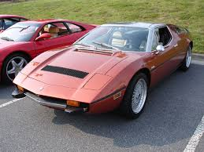

Modell: Maserati 3500 GT
Baujahr: 1957-1964
Produktionsstückzahl: 2.200+
Motor: 3.5L I6
Leistung: 220 PS
Höchstgeschwindigkeit: 240 km/h
Modell: Maserati Ghibli
Baujahr: 1967-1973
Produktionsstückzahl: 1.149+
Motor: 4.7L V8
Leistung: 330 PS
Höchstgeschwindigkeit: 260 km/h
Modell: Maserati Quattroporte I
Baujahr: 1963-1969
Produktionsstückzahl: 774+
Motor: 4.2L V8
Leistung: 255 PS
Höchstgeschwindigkeit: 240 km/h
Modell: Maserati Mistral
Baujahr: 1964-1970
Produktionsstückzahl: 1.200+
Motor: 3.7L I6
Leistung: 230 PS
Höchstgeschwindigkeit: 240 km/h

Modell: Maserati Bora
Baujahr: 1971-1978
Produktionsstückzahl: 564+
Motor: 4.7L V8
Leistung: 310 PS
Höchstgeschwindigkeit: 270 km/h